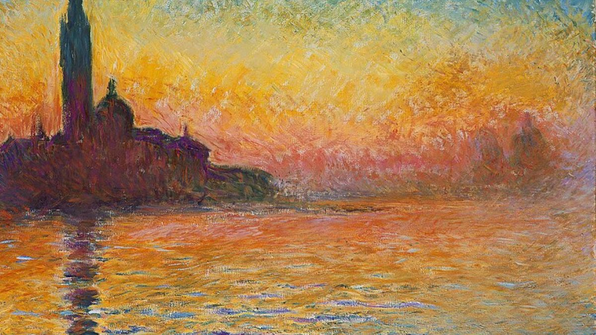

¿Qué fue el impresionismo?
Fue un movimiento artístico que surgió en Francia durante la segunda mitad del siglo XIX. Sus integrantes buscaban capturar la impresión visual de un instante, en lugar de representar cada detalle de forma precisa.
Viaja al nacimiento del impresionismo y descubre cómo la luz, el color y la vida cotidiana inspiraron una nueva forma de pintar.
Conoce las ideas, personas y circunstancias que dieron forma a esta expresión artística.
Fue un movimiento artístico que surgió en Francia durante la segunda mitad del siglo XIX. Sus integrantes buscaban capturar la impresión visual de un instante, en lugar de representar cada detalle de forma precisa.
Los artistas impresionistas estudiaban cómo la luz modifica los colores a lo largo del día. Por eso pintaban al aire libre y utilizaban pinceladas visibles, colores luminosos y contrastes.
En lugar de centrarse únicamente en escenas históricas o mitológicas, muchos impresionistas representaron paisajes, jardines, calles, estaciones de tren y momentos de la vida moderna.
Claude Monet, Pierre-Auguste Renoir, Edgar Degas, Berthe Morisot y Camille Pissarro fueron figuras destacadas. Al principio recibieron críticas, pero con el tiempo su trabajo transformó la pintura moderna.
Selecciona una pieza para conocer su historia, sus detalles y su significado.

Los impresionistas cambiaron la forma de acercarse al paisaje y a la vida cotidiana. En vez de trabajar siempre dentro del estudio, muchos salían al exterior para observar directamente cómo la luz transformaba una escena. Sus pinceladas rápidas y colores luminosos buscaban transmitir una experiencia visual inmediata.
Completa las dos actividades para terminar tu visita.
Relaciona las imágenes con sus conceptos.
Responde cinco preguntas sobre esta exposición.